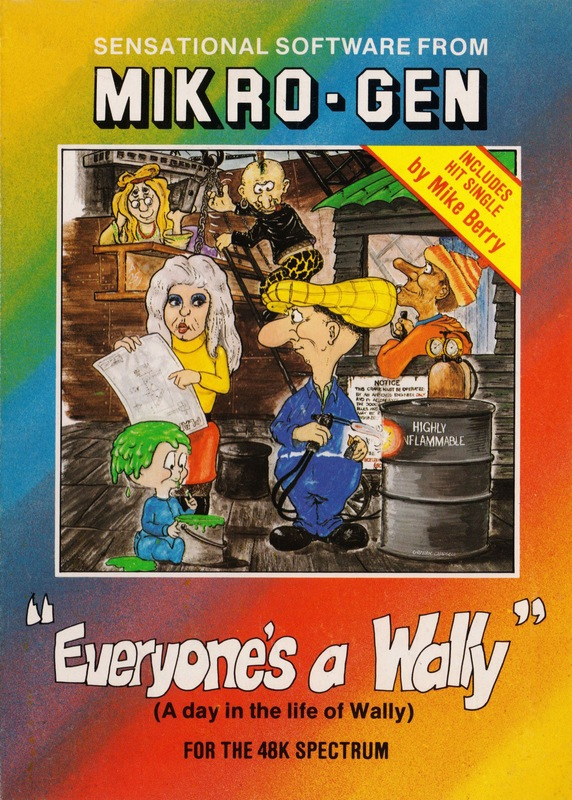
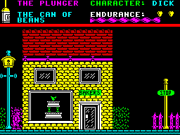
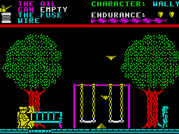
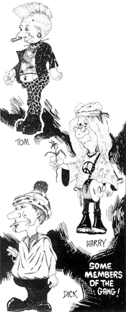

Everyone's a Wally


{kind=link}

| Publisher: | Mikro-Gen |
| Price: | £9.95 |
| Year: | 1985 |
| Source: | CRASH, Issue 14 |

After the success of Automania and Pyjamarama the third in the series is probably the most awaited game of the moment with the possible exception of Alien 8. Follow-ups are a dangerous route to take because comparisons are inevitable. Mikro-Gen seem only too aware of this and have taken pains to see that each one is better than the last. In Everyone’s a Wally this is certainly true, but they have also expanded the game play and introduced new characters so that Wally’s gang are themselves becoming possible future programs. The most notable introductions are Mrs. Week and Master Week. The missus is Wilma, a real dolly-sprite, and the youngster is Herbert, a menace on hands and knees who appears to have the freedom of Walliesville. The rest of the gang are Tom, Dick and Harry.

With the exception of Herbert (who is completely out of hand) the gang are all player-controllable, one at a time. Each of them is capable of undertaking different tasks, Dick, for instance, is the plumber. The gang has a list of tasks, most of which must be performed by the right person and with the right tools, often jobs depend on other tasks having been completed first. The overall object of the game is to collect all the code letters required to crack the bank safe to steal the money to pay the gang. The code letters act as objects to be collected and they must be taken to the bank in their correct sequence which you have to establish.
As in Pyjamarama objects are scattered everywhere and are collected by walking over them which results in the carried object being deposited. Since all five player-controlled characters lead an independent life when not under control, this can become infuriating when someone wanders in and picks up an object you were just about to collect. Exchange of control is done when an uncontrolled character enters the same screen as your controlled character. You then just press the appropriate numerical key and control is exchanged. At any time, by pressing the key for the character you want to know about, a message comes up at the top which tells you where they are.

Wilma
Like everyone else, the gang need feeding. Wilma’s quite good at shopping, which is just as well because although Wally will eat anything, the others are much fussier. As a consequence of all the variously inter-related actions, characters and situations, Everyone’s A Wally is actually a series of separate arcade/adventures within an overall arcade/adventure; and of course there are always the hazards lying around which are detrimental to energy. Pyjamarama had a Space Invaders game in the Video Room, Everyone’s a Wally has two little arcade games tucked into its innards — try a phone call, or cross town underneath the streets!
Another big difference between this and the other programs is that Mikro-Gen have included a free hit single on the reverse of the tape, recorded by Mike Berry and called — guess what?
CRITICISM

‘Okay Wally, you’ve had it easy so far, so let’s try and give you something a BIT harder to do. Just raid the bank to pay for the gangs’ wages. Easy, right? Well there are a couple of tasks to perform like repairing the fountain and the gas main, and some of those vehicles you’ll need are broken. BUT being a Wally you can’t possibly do all this by yourself, so there are a few friends around to help out. As usual you’ve been placed in BRILLIANT graphics and there’s a great tune — a Wally tune of course — before you start on your Wallyventure. Being a Wally, everything is so difficult it may take you some time just to familiarise yourself with your Wally surroundings. Well Wally, what are you waiting for? You’ve been set in the perfect game so make the most of your brill graphics, sound and friends and get cracking on your megadventure.’
‘Continuing with the trilogy of Wally, the theme has been taken one step further; more characters have been introduced to the game and these add a new dimension to the playing techniques. The idea of expanding one character to five must be a major advance in the game idea. Each character, having its own task to complete, does make the game somewhat more difficult and adds more depth. The graphics are along the now traditional Wally line but there are more of them and they are more detailed; each of the main characters is very clear and distinctly personal. The only problem in this area is the usual attribute problem when more than two colours are used, but this is not too disturbing, and after a while you hardly notice it in any case. Animation is superb, and I especially liked baby Wally, who crawled very well. The Wally trilogy is going more into the adventure-arcade theme where both types of skill are required. All in all even a better game than Pyjamarama was. Another winner by Mikro-Gen.’
‘Success seems to be going to Wally’s stomach — he’s putting on a touch of weight. Mind you, when you see the butcher’s and the baker’s you can see why. A map of the town in which the action takes place should be fun, but it’ll take a bit of time to get round it. As usual the graphics are big and very colourful with tons of drawn detail. Attribute flashes when a character passes in front of something and re-colours it are there of course, but the painterly look of this game is hardly spoiled by such unavoidable things. Once again the mystery of what does when and how to get at it, where to leave it so you can get it again and so on, is the nub of the game. But the addition of other controllable characters makes everything much more complicated. Everyone’s a Wally has to be a big hit, and I hope the pop single on the other side of the cassette does as well (although our preview copies did not have this on yet). Excellent value and great fun.’
COMMENTS
| Control keys: | Q,E,T,U,O/W,R,Y,I,P left/right, 3rd row for exit screen (through doors, streets etc.), 4th row to jump, 1-5 select character keys |
| Joystick: | Kempston, Sinclair 2 |
| Keyboard play: | Highly responsive |
| Use of colour: | Excellent |
| Graphics: | Excellent |
| Sound: | Very good |
| Skill levels: | 1 |
| Lives: | Endurance |
| Screens: | Lots (to be advised by readers)! |
| General rating: | Excellent. |
| Use of computer: | 90% |
| Graphics: | 93% |
| Playability: | 94% |
| Getting started: | 89% |
| Addictive qualities: | 96% |
| Value for money: | 96% |
| Overall: | 93% |